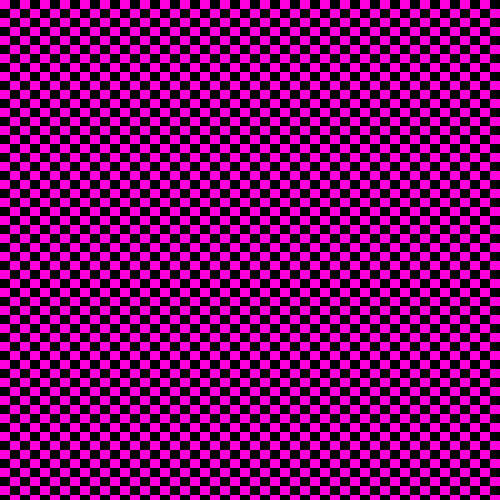

Today, on this earth, Mr. Hanagami has been missing for 5 days (basically forever). Therefore, it is left to us to wonder WHY he might have done this (and by the end, you'll be left wondering why you read this!)
Reason 1: Supervising Factory Production
Mr. Hanagami may have been the one supervising the Red Triangle factory when the Blue Circle incident occured. This would explain his absence as the meme format gained steam, as well as the popularity of blue circles amongst the classroom.
Reason 2: Hurricane/Storm Activity
He may have taken leave to spin around really fast in the Pacific Ocean, creating a hurricane or two.
Reason 3: I already handed in my assignments
Check the flashdrive. Pretty sure IPutTheNewForgisOnTheJeep.py is still on there. Such a masterpiece has required 3+ years to fully interpret and understand, and you've been defeated by its genius. (the file is literally empty)

Reason 4: He might actually be sick
Mr. Hanagami might have been sick. Truly, a wild and foolish suggestion. I doubt this would happen.